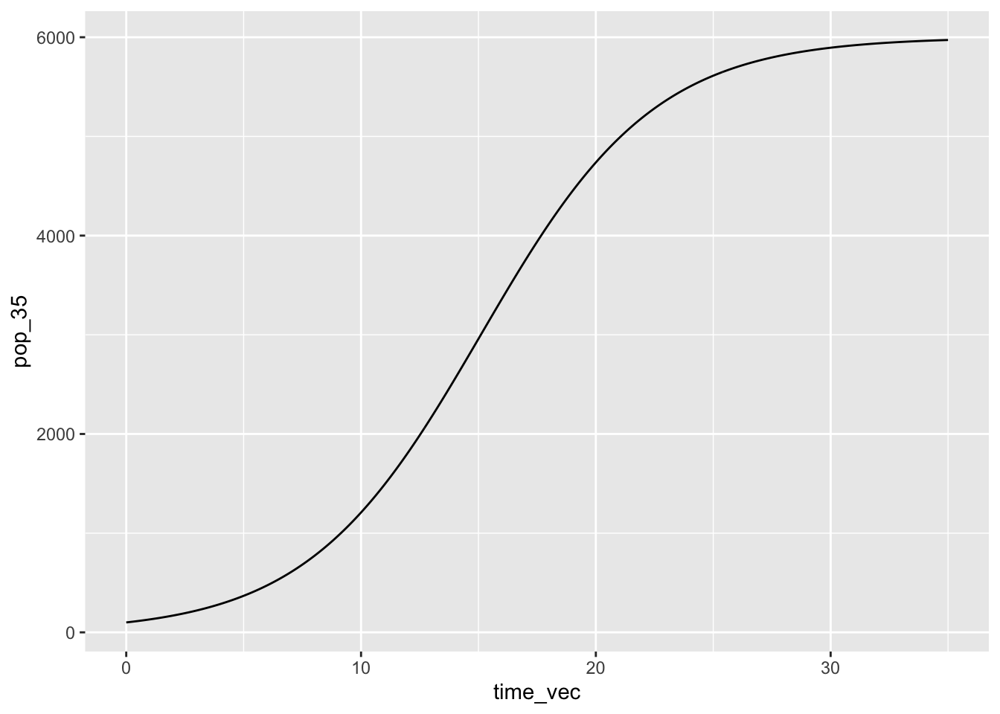
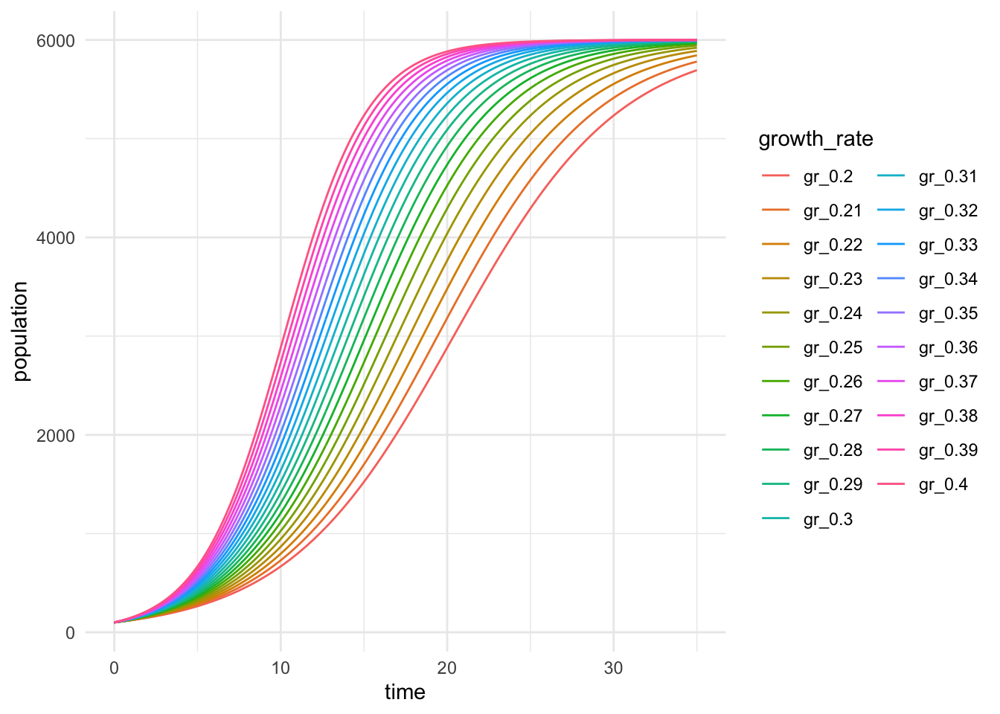

End Interactive Session 4
birddog_sum <- function(bird, dog) {
pets = bird + dog
return(pets)
}
# Use it!
birddog_sum(bird = 2, dog = 5)[1] 7Functions - introduction, basics, examples
Let’s check out documentation for a few basic functions in R. This will help us get an idea of the type of features we may want to add to our functions in the future, and to familiarize ourselves with how to read and understand function documentation (which can admittedly be…a lot).
To see documentation for R functions, run ?functionname. This should bring up the function documentation in the Help tab in RStudio. For example, try running ?min.
What are the different pieces in the documentation?
To see function documentation in Python, run help(functionname). This will bring up a new window with information about the function (press q to escape). For example, try running help(min) in the Python interpreter.
From Chapter 19 - Functions in R for Data Science: “There are three key steps to creating a new function:
You need to pick a name for the function.
You list the inputs, or arguments, to the function inside function.
You place the code you have developed in body of the function.”
The bird-dog sum example in R:
birddog_sum <- function(bird, dog) {
pets = bird + dog
return(pets)
}
# Use it!
birddog_sum(bird = 2, dog = 5)[1] 7The bird-dog sum example in Python:
Note the similarities and differences in syntax between R and Python functions.
Make a function called double_it that doubles any value input value.
In R:
[1] 48[1] 2 1 -400In Python:
50# Create a vector (NumPy array)
v = np.array([4, 1])
# Use the function to double all elements in the vector:
double_it(v)[8 2]# Question: what if you apply double_it() to a LIST in Python?
w = [3,5,8]
double_it(w) # Note this behavior - lists & tuples are operated on differently than NumPy arrays / vectors! [3, 5, 8, 3, 5, 8]Write a function that returns the statement “I am ___ years old!”, where the blank is entered by the user as argument age.
In R:
[1] "I am 10 years old!"In Python:
print() versus return()What’s the difference between print() and return()?. The print() function just makes something visible to us. It does not get stored for later use. If we want an output to be stored for use, we use return().
Yeah the difference can be kind of tricky, because it sometimes seems like when we use print() it has stored something. Let’s check out an example that highlights the difference.
A Python example:
def find_max(val_1, val_2):
if (val_1 > val_2):
return(val_1)
elif (val_2 > val_1):
return(val_2)
# We can use that returned output for another calculation:
5 * find_max(7, 3)35What happens if instead of return() we’d used print() here?
Similar to for loops, we can have conditionals within functions - this means that what the function does with arguments will change based on what those argument values are.
Returning to an example that we saw previously, let’s say we want to make a function that returns the age of an animal in animal years, given the species and age in human years. For example: 1 human year = 7 dog years, and 1 human year = 4.7 goat years.
Write a function with two arguments: animal and age, which converts the animal’s age from human to animal years.
In R:
animal_age <- function(animal, age) {
if (animal == "dog") {
print(age * 7)
} else if (animal == "goat") {
print(age * 4.7)
}
}
# Try an 8 year old dog.
animal_age(animal = "dog", age = 8)[1] 56What if the input isn’t dog or goat? Remember this question - we’ll return to it later on.
A question to keep in mind: it’s easy enough to manually code in the animal species and conversion factor since we only have two animals. Would we want to manually write this out if we had 20 species? 50 species?
In Python:
Let’s say we have a table of the dogs’ favorite foods.
# A tibble: 4 × 2
dog_name food
<chr> <chr>
1 Khora everything
2 Teddy salmon
3 Waffle pancakes
4 Banjo chicken Write a function that only requires the dog name as an input, then automatically pulls information from the data frame (stored as dog_choice) to return the phrase “My name is _____ and I love eating ____!”
Here I’ll introduce a new function: dplyr::filter(). This is a fantastic function for creating subsets from our data. We’re going to be using it a LOT in our data wrangling lessons last week. For now, know that it returns a logical TRUE or FALSE based on whether or not elements in a vector satisfy the conditions.
Let’s talk through what this code is actually doing:
dog_menu <- function(name) {
my_sub <- dplyr::filter(dog_choice, dog_name == name)
print(paste("My name is", my_sub$dog_name, "and my favorite food is", my_sub$food))
}
# Try it! What is Waffle's favorite food?
dog_menu(name = "Waffle")[1] "My name is Waffle and my favorite food is pancakes"[1] "My name is Khora and my favorite food is everything"Aha - now we can see that we don’t have to write out every value in our function! We can pull elements directly from a table to switch parameters based on user selection / inputs!
Sometimes, we’ll want to iterate over different elements of a data structure (e.g. data frame columns), applying a function we write to each of them. We’ve learned a couple of coder-friendly tools to loop over columns (e.g. apply, purrr::map()), but let’s write one from scratch first.
Write a function that iterates over each column in a data frame (name gets specified), calculating the mean value for each and returning the phrase “The mean value of (column name) is _____.”
Note: the colnames() function in base R returns column names.
df_means <- function(df) {
for (i in 1:ncol(df)) {
col_mean <- mean(df[[i]])
column_name <- colnames(df[i])
print(paste("The mean value of", column_name, "is", col_mean))
}
}
df_means(df = mtcars)[1] "The mean value of mpg is 20.090625"
[1] "The mean value of cyl is 6.1875"
[1] "The mean value of disp is 230.721875"
[1] "The mean value of hp is 146.6875"
[1] "The mean value of drat is 3.5965625"
[1] "The mean value of wt is 3.21725"
[1] "The mean value of qsec is 17.84875"
[1] "The mean value of vs is 0.4375"
[1] "The mean value of am is 0.40625"
[1] "The mean value of gear is 3.6875"
[1] "The mean value of carb is 2.8125"Why only the single square brackets to refer to the column names here? Try it! What is returned when we use colnames(mtcars[2]) versus colnames(mtcars[[2]])?
So, will this actually work on other data frames? Let’s make one!
We now know a bit about writing functions. But we also want them to be as helpful as possible - meaning that we need to create useful error messages, documentation and tests. We’ll start by adding some stop() statements to create error messages.
First, it’s important when designing a function to think about what will make it fail. For example, if a function does an age conversion on a number, what happens if the user inputs a character? What happens if a user only enters one argument value, but the function requires two? Let’s take a look at some examples for adding error messages.
stop()Returning to our function to convert animal ages:
We want to add some error messages that are helpful to the user of the function. We’ll use the stop() function
animal_age_stop <- function(animal, age) {
if (!animal %in% c("dog", "goat")) {
stop("Oops! Animal must be a dog or a goat.")
}
if (is.numeric(age) == FALSE) {
stop("The age must be a number between 0 and 100")
}
if (age <= 0) {
stop("Age must be a number greater than zero.")
}
if (animal == "dog") {
print(age * 7)
} else if (animal == "goat") {
print(age * 4.7)
}
}Sometimes, you still want code to run (i.e., not throw an error message and stop), but there might be something suspicious about the inputs or outputs that you’d want to alert the user about. For example, maybe you’ll flag an input for dog age if the person adds a value over 22 years - it won’t not work, but it’ll give a friendly heads up that that’s a very old dog, are you sure that’s the value you wanted to enter?
We can add warning messages to functions in R using warning(). Keep in mind that the function will still run - this is very different than a hard stop from an error message.
Example: Betz’ Limit
The full power in wind hitting a turbine is:
\[P = 0.5\rho Av^3\]
where \(P\) is power in Watts (joules/second), \(\rho\) is the air density (kg/m3), \(A\) is the area covered by the turbine blades (square meters), and \(v\) is the wind velocity (m/s).
However, the Betz Limit means that turbines can only collect ~60% of the total wind power, which updates the theoretical “collectable” power (before accounting for inefficiencies, losses, etc.) to:
\[P = 0.3\rho Av^3\]
Write a function to calculate maximum collectable wind power (Watts) by a turbine requiring three inputs:
Add the following errors and warnings:
calc_windpower <- function(rho, radius, windspeed) {
if (windspeed > 130) {
warning("Whoa, that's a high windspeed! Are you sure that's correct?")
}
if (rho > 1.225) {
warning("That air density is suspicious.")
}
if (radius < 0) {
stop("Rotor radius must be a positive value (meters).")
}
0.3*rho*pi*(radius^2)*(windspeed^3)
}Now test your function with different inputs. Are your messages working?
# Let's create a data frame:
# Now let's write a function that automatically switches depth based on
gw_rate <- function(site) {
# Stored parameters for 4 different sites
gw_depths <- data.frame(sitename = c("mountain", "prairie", "desert", "beach"),
depth = c(32, 41, 63, 2),
slope = c(11.2, 0.4, 0.8, 2.6))
# Subset for just that site information (creates a 1-row data frame)
site_select <- filter(gw_depths, sitename == site)
# Calculate using values from that 1-row data frame
transport_rate <- 1.4 * site_select$slope + 3.6 * site_select$depth
# Return the output
return(transport_rate)
}
gw_rate(site = "beach")[1] 10.84# Alternatively, with switch()
gw_rate_switch <- function(site) {
# Stored parameters for 4 different sites
gw_depths <- switch(site,
"mountain" = c(32, 11.2),
"prairie" = c(41, 0.4),
"desert" = c(63, 0.8),
"beach" = c(2, 2.6))
# Calculate using values from that 1-row data frame
transport_rate <- 1.4 * gw_depths[2] + 3.6 * gw_depths[1]
# Return the output
return(transport_rate)
}
gw_rate_switch("beach")[1] 10.84Logistic growth equation (within a for loop where growth rate changes)
Sinusoidal function with varying parameters
In EDS 212, we learned about the logistic growth equation:
\[N_t=\frac{K}{1+[\frac{K-N_0}{N_0}]e^{-rt}}\]
Where \(N_0\) is the initial population size at time (\(t\)) 0, \(K\) is the carrying capacity, \(r\) is the population growth rate, and \(N_t\) is the population size at time \(t\).
First, let’s write write the bare-bones function:
# Build & check the minimum function
logistic_growth <- function(N0, K, r, time) {
Nt <- K / (1 + ((K - N0) / N0) * exp(-r * time))
print(Nt)
}
# Do the values check out when you test this?
logistic_growth(N0 = 100, K = 6000, r = 0.27, time = 40)[1] 5992.787Cool. So this seems to be working when we assign single values for the different parameters.
Now, let’s explore what this looks like over a whole sequence of times (e.g. from t = 0 to t = 40):
# Create a vector of times:
time_vec <- seq(from = 0, to = 35, by = 0.1)
# Apply the logistic growth function to that vector of times (& store):
pop_35 <- logistic_growth(N0 = 100, K = 6000, r = 0.27, time = time_vec)
# Bind together the time_vec and population:
pop_time_35 <- data.frame(time_vec, pop_35)
# Always take a look at it
# View(pop_time_35)
# Alternatively with an inner for loop:
pop_35_vec <- vector(mode = "numeric", length = length(time_vec))
for(i in seq_along(time_vec)) {
population <- logistic_growth(N0 = 100, K = 6000, r = 0.27, time = time_vec[i])
pop_35_vec[i] <- population
}Now, a graph of the output:
# Make a little graph:
ggplot(data = pop_time_35, aes(x = time_vec, y = pop_35)) +
geom_line(size = 0.5)Warning: Using `size` aesthetic for lines was deprecated in ggplot2 3.4.0.
ℹ Please use `linewidth` instead.
But we can imagine that we may want to ask: What does this look like as we change the initial population size? Or the growth rate? Etc.
In that case, we may want to apply our function over a range of growth rates (from 0.20 to 0.40, by increments of 0.01), for the time sequence we used here (0 to 35).
Create a nested for loop!
# Create a for loop that goes through each, apply the
# logistic growth function for a range of times for each growth rate
# Need to create a MATRIX to store the outputs in:
out_matrix <- matrix(nrow = length(time_vec), ncol = length(r_seq))
# Now, a nested for loop:
for (i in seq_along(r_seq)) { # Outer loop is the growth rates
for (j in seq_along(time_vec)) { # Inner loop is the time sequence values
pop <- logistic_growth(N0 = 100, K = 6000, r = r_seq[i], time = time_vec[j])
out_matrix[j, i] <- pop # Store the value in the appropriate row & column
}
}Now some wrangling so we can visualize it:
# Let's wrangling it a little bit
out_df <- data.frame(out_matrix, time = time_vec) # Make it a data frame and add time
# Update the column names of out_df, keeping time column name the same
colnames(out_df) <- c(paste0("gr_", r_seq), "time")
# pivot_longer to make it tidy (you'll learn more about this next week)
out_df_long <- out_df %>%
pivot_longer(cols = -time, names_to = "growth_rate", values_to = "population")
# Then plot it:
ggplot(data = out_df_long, aes(x = time, y = population)) +
geom_line(aes(color = growth_rate)) +
theme_minimal()
{testthat}As we develop algorithms, we’ll change our code. We want a way to automatically check our function to make sure it’s behaving as expected. The testthat package “tries to make testing as fun as possible.”
Unit test: A unit test is an automated check of a piece (“unit”) of your code
Let’s consider an example. We’re writing a function to find the mean value of each column, then return the lowest and highest mean calculated (in that order). We would expect:
Let’s write the function, then some accompanying tests to make sure they’re working.
mean_range <- function(df) {
col_means <- map_df(df, .f = mean) # Returns column means as a df
col_mean_max <- max(col_means) # Looks for the maximum value
col_mean_min <- min(col_means) # Looks for the minimum value
print(c(col_mean_min, col_mean_max))
}
# Try it out:
mean_range(df = mtcars)[1] 0.40625 230.72188OK great. But we’re doing some work on this code, and we don’t want to have to try a bunch of different things manually each time we change it to see how it breaks. Instead, we’ll write some automated tests for this function that help us avoid that (tomorrow!).
End Interactive Session 4
What’s the output of this nested for loop?
apples <- c(1, 2, 3, 4)
price <- c(7, 10, 25)
fruit_out <- matrix(nrow = length(price), ncol = length(apples))
for (i in seq_along(apples)) {
for (j in seq_along(price)) {
total_cost <- price[j] * apples[i]
fruit_out[j, i] <- total_cost
}
}
fruit_out [,1] [,2] [,3] [,4]
[1,] 7 14 21 28
[2,] 10 20 30 40
[3,] 25 50 75 100file_prefix <- c("temp", "ph", "salinity")
file_suffix <- c(1, 2, 3, 4, 5)
# First: printing names
for (i in seq_along(file_prefix)) {
for (j in seq_along(file_suffix)) {
print(paste0(file_prefix[i], "_", file_suffix[j]))
}
}[1] "temp_1"
[1] "temp_2"
[1] "temp_3"
[1] "temp_4"
[1] "temp_5"
[1] "ph_1"
[1] "ph_2"
[1] "ph_3"
[1] "ph_4"
[1] "ph_5"
[1] "salinity_1"
[1] "salinity_2"
[1] "salinity_3"
[1] "salinity_4"
[1] "salinity_5"# Second: storing them in a matrix (populated by COLUMN)
filename_matrix <- matrix(nrow = length(file_suffix), ncol = length(file_prefix))
for (i in seq_along(file_prefix)) {
for (j in seq_along(file_suffix)) {
file_name <- paste0(file_prefix[i], "_", file_suffix[j])
filename_matrix[j, i] <- file_name
}
}
filename_matrix [,1] [,2] [,3]
[1,] "temp_1" "ph_1" "salinity_1"
[2,] "temp_2" "ph_2" "salinity_2"
[3,] "temp_3" "ph_3" "salinity_3"
[4,] "temp_4" "ph_4" "salinity_4"
[5,] "temp_5" "ph_5" "salinity_5"quarter_splits <- c(1, 1.1, 1.2, 1.1, 1.4, 1.5, 1.6, 1.4)
half_splits <- vector(mode = "numeric", length = length(quarter_splits) - 1)
# NOTE FOR CLASS OF 2023: check seq_along here, use 1:(length(quarter_splits) - 1) instead
for (i in 1:(length(quarter_splits) - 1)) {
half_mile <- quarter_splits[i] + quarter_splits[i + 1]
half_splits[i] <- half_mile
}
half_splits[1] 2.1 2.3 2.3 2.5 2.9 3.1 3.0